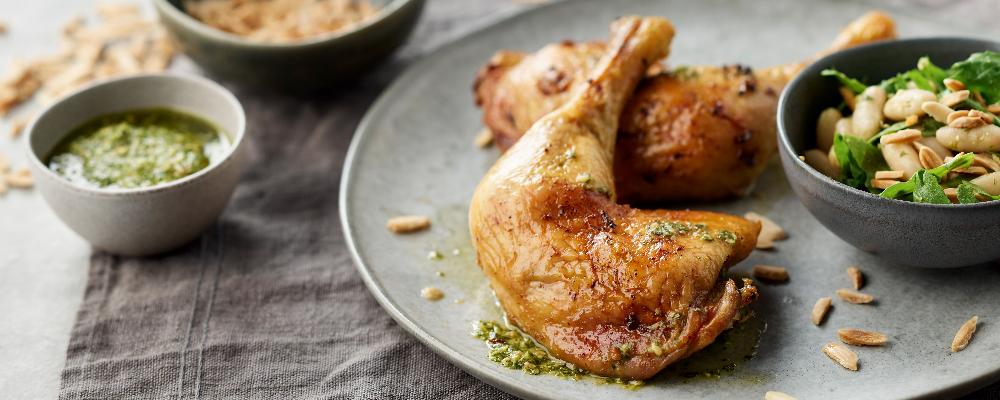
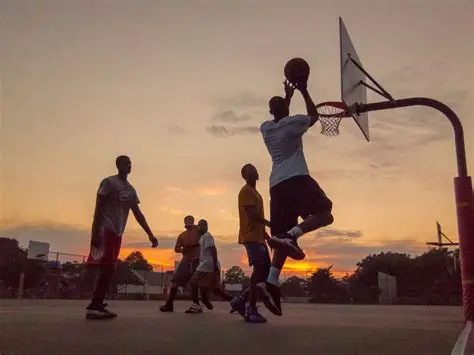

Comida favorita
Mi comida favorita es el pollo.
Comida
Mi comida favorita es el pollo.
Comida
Me gusta mucho jugar basketball aunque casi nunca veo partidos en vivo.
DeporteMi videojuego favorito es Red Dead Redemption, me gustan las historias de vaqueros.
Videojuego